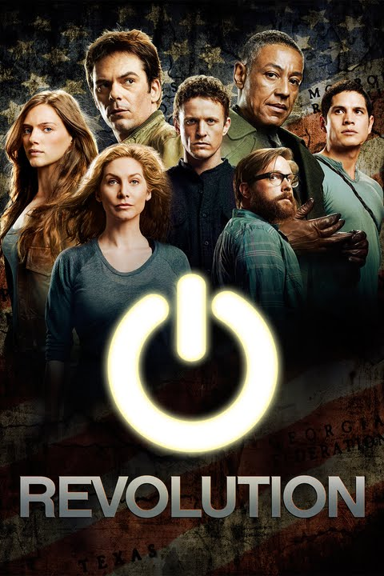

Revolution (Aired 2012-2014)
Rating: 6.7/10
Age Restriction: TV-14
A global blackout pushed the world to move back into a pre-industrial state of mind. Fifteen years later, Charlie sets out to find her uncle Miles, and save the world from a man posing as the Government, and to try and bring back power worldwide.
Creator: Eric Kripke
Cast
Billy Burke as .... Miles Matheson
Tracy Spiridakos as .... Charlie Matheson
Giancarlo Esposito as .... Tom Neville
Zak Orth as .... Aaron Pittman
David Lyons as .... Sebastian 'Bass' Monroe
Elizabeth Mitchell as .... Rachel Matheson
JD Pardo as .... Jason Neville
Stephen Collins as .... Dr. Gene Porter
Daniella Alonso as .... Nora Clayton
Maureen Sebastian as .... Priscilla Pittman